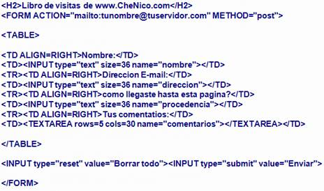

Formularios
Los formularios fueron una de las primeras mejoras que se dieron a conocer de HTML5 y de las que más revuelo causaron, sobre todo por su gran capacidad de autovalidación de una manera extremadamente fácil y sin necesidad de utilizar JavaScript.EJEMPLO:
EJEMPLO 2
a continuacion podras ver un video el cual te explica dese cero como se crea un formulario.Autovalidacion grafica
Para que el formulario pueda resaltar visualmente qué campos obligatorios es necesario rellenar, que campos son válidos o qué campos tienen valores incorrectos utilizamos el selector :invalid{, mientras que el selector [required]{ señala aquellos campos que son obligatorios y que los valores introducidos son correctos y :valid{ se encarga de gestionar aquellos campos que son correctos.

Con este código CSS todos los campos con valores obligatorios (es decir, que tengan el atributo required) y que tengan un valor correcto, tendrán el borde de color verde y una sombra interna también verde. Aquellos campos que tienen valores incorrectos o bien están sin rellenar, siendo obligatorios, tendrán un borde y una sombra interna de 8 píxeles de color rojo y aquellos campos que tengan un contenido válido, tendrán tanto el borde como la sombra de color azul.